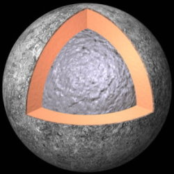

Mercure est la première planète du système solaire. Il s'agit d'une planète tellurique
Mercure est connue depuis que les hommes s'intéressent au ciel nocturne ; la première civilisation à en avoir laissé des traces écrites est la civilisation sumérienne.
Il s'agit de la planète la plus proche du Soleil où un seul jour dure deux années. En effet sous l'effet de marée gravitationnelle exercéee par le Soleil, Mercure subit un effet de résonance (Proche du Soleil, la force de marée augmente et accélère la rotation mais, à ce moment, l'interaction rotation/révolution ralentit la course de l'orbite et rétablit le rapport initial de deux tiers). Ainsi trois journées mercuriennes dureront deux années mercuriennes (3 tours sur elle-même pendant qu'elle effectuera 2 orbites autour du Soleil).
Le Soleil est si proche de Mercure que, vu de celle-ci, il apparaît quatre fois plus gros que sur Terre et sept fois plus lumineux.
Etant située entre le Soleil et la Terre on peut observer, à de rares occasions, le La surface de la planète a subi un important bombardement météoritique suivi d'une remontée de magma dans les premières années de son existence, et elle ressemble à celle de la Lune.
On peut observer à sa surface des plaines, des falaises pouvant atteindre 3000 m de hauteur et plusieurs centaines de kilomètres de longueur. Sa surface, composée de roches poreuses et sombres, réfléchit faiblement la lumière solaire.
Mercure est difficilement observable depuis la Terre du fait de sa proximité avec le Soleil, à tel point que le seul regret de Nicolae De Copernic avant de mourir est de ne jamais avoir pu l'observer.
STRUCTURE
Le cœur de Mercure est composé d'un noyau solide de 1000 km de rayon entouré d'une enveloppe liquide de 800 à 900 km d'épaisseur. Ce cœur correspond à un minimum de 55% de la masse de la planète. Il est constitué de fer.
Cet énorme noyau est recouvert d'un manteau de silicate d'une épaisseur de 500 à 600 km, puis d'une croûte épaisse de 26 km.